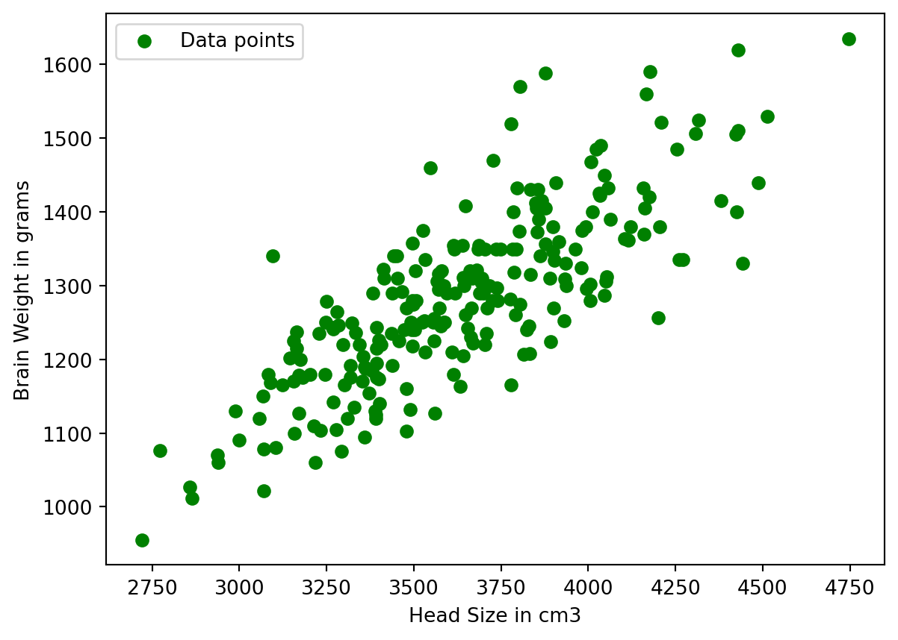
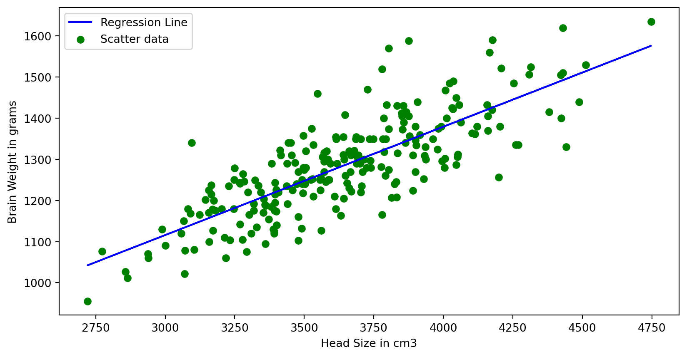
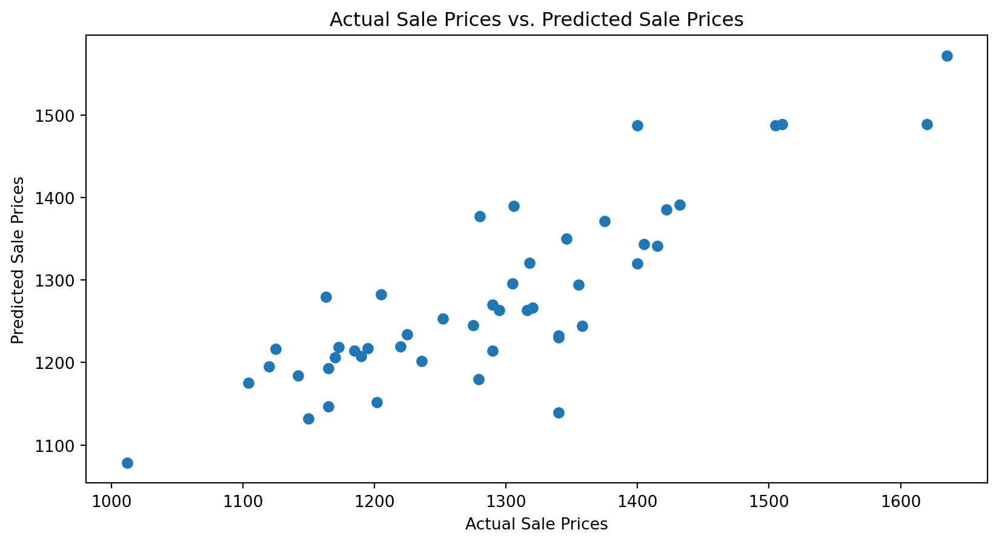
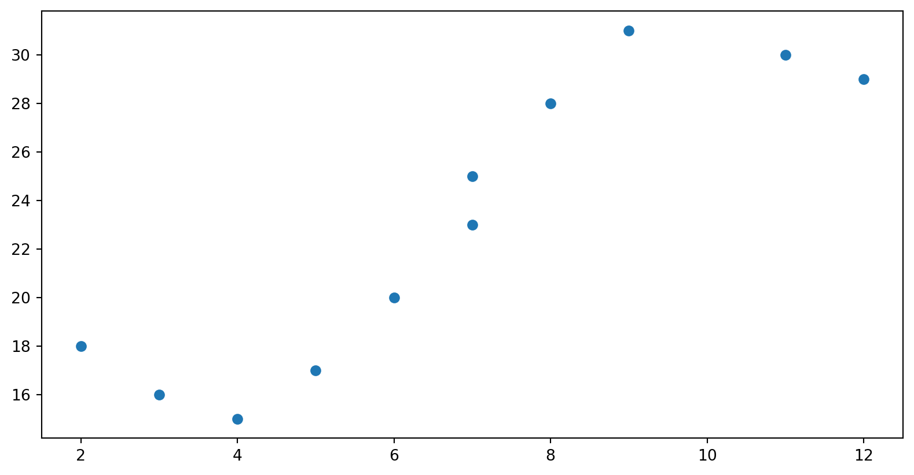
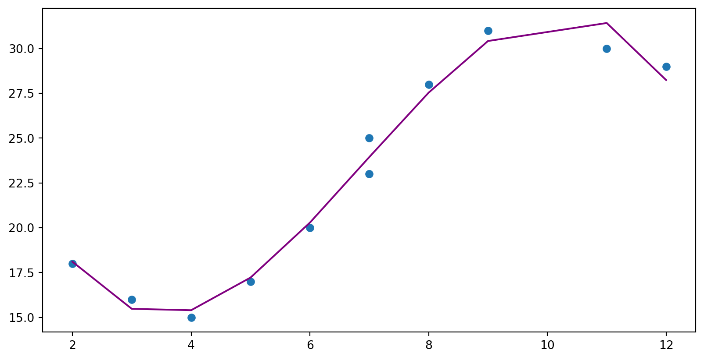

# Import Libaryimport matplotlib.pyplot as pltimport numpy as npimport pandas as pdfrom sklearn.linear_model import LinearRegression# Download and prepare the datadf=pd.read_csv("headbrain.csv")df.head()
# Plot the Input Dataplt.scatter(X, Y, c='green', label='Data points')plt.xlabel('Head Size in cm3')plt.ylabel('Brain Weight in grams')plt.legend()plt.show()

# Plot the Input Data# Calculating coefficient# Mean X and Ymean_x = np.mean(X)mean_y = np.mean(Y)# Total number of valuesn =len(X)# Using the formula to calculate theta1 and theta2numer =0denom =0for i inrange(n): numer += (X[i] - mean_x) * (Y[i] - mean_y) denom += (X[i] - mean_x) **2b1 = numer / denomb0 = mean_y - (b1 * mean_x)# Printing coefficientsprint("coefficients for regression",b1, b0)
coefficients for regression 0.26342933948939945 325.57342104944223
# Plotting Values and Regression Line%matplotlib inlineplt.rcParams['figure.figsize'] = (10.0, 5.0)# max_x = np.max(X) + 100# min_x = np.min(X) - 100y = b0 + b1 * X# Ploting Lineplt.plot(X, y, color='blue', label='Regression Line')# Ploting Scatter Pointsplt.scatter(X, Y, c='green', label='Scatter data')plt.xlabel('Head Size in cm3')plt.ylabel('Brain Weight in grams')plt.legend()plt.show()

# Calculating Root Mean Squares Errorrmse =0for i inrange(n): y_pred = b0 + b1 * X[i] rmse += (Y[i] - y_pred) **2rmse = np.sqrt(rmse/n)print("Root Mean Square Error is",rmse)
# Import necessary librariesimport pandas as pd# Load the datasetdf = pd.read_csv('headbrain.csv')# Explore the datasetdf.head()
Gender
Age Range
Head Size(cm^3)
Brain Weight(grams)
0
1
1
4512
1530
1
1
1
3738
1297
2
1
1
4261
1335
3
1
1
3777
1282
4
1
1
4177
1590
print(df.isnull().sum())
Gender 0
Age Range 0
Head Size(cm^3) 0
Brain Weight(grams) 0
dtype: int64
mean_x = np.mean(X)mean_y = np.mean(Y)#Total number of Valuesn =len(X)
from sklearn.linear_model import LinearRegressionfrom sklearn.metrics import mean_squared_errorX = X.reshape((n,1))
model = LinearRegression()
model = model.fit(X,Y)
r2 = model.score(X,Y)print('R^2 value: ',r2)
R^2 value: 0.639311719957
from sklearn.model_selection import train_test_splitX = df[['Head Size(cm^3)']] # Select relevant featuresy = df['Brain Weight(grams)'] # Define the target variableX_train, X_test, y_train, y_test = train_test_split(X, y, test_size=0.2, random_state=42)
from sklearn.linear_model import LinearRegressionimport matplotlib.pyplot as pltfrom sklearn.metrics import mean_squared_error, r2_scoremodel = LinearRegression() # Create a linear regression modelmodel.fit(X_train, y_train) # Fit the model to the training data
LinearRegression()
In a Jupyter environment, please rerun this cell to show the HTML representation or trust the notebook. On GitHub, the HTML representation is unable to render, please try loading this page with nbviewer.org.
LinearRegression()
y_pred = model.predict(X_test)
plt.scatter(y_test, y_pred) # Scatter plot to visualize actual vs. predicted valuesplt.xlabel("Actual Sale Prices")plt.ylabel("Predicted Sale Prices")plt.title("Actual Sale Prices vs. Predicted Sale Prices")plt.show()

# Make predictions on the test sety_pred = model.predict(X_test)# Calculate Mean Squared Error (MSE)mse = mean_squared_error(y_test, y_pred)# Calculate R-squared (R²) scorer2 = r2_score(y_test, y_pred)print(f"Mean Squared Error (MSE): {mse:.2f}")print(f"R-squared (R²) Score: {r2:.2f}")
Mean Squared Error (MSE): 4672.04
R-squared (R²) Score: 0.71
#Non Linear Regression
##Method 1 (Manual dataset)
import matplotlib.pyplot as pltimport numpy as np#define predictor and response variablesx = np.array([2, 3, 4, 5, 6, 7, 7, 8, 9, 11, 12])y = np.array([18, 16, 15, 17, 20, 23, 25, 28, 31, 30, 29])#create scatterplot to visualize relationship between x and yplt.scatter(x, y)
<matplotlib.collections.PathCollection at 0x1dd70cab640>

from sklearn.preprocessing import PolynomialFeaturesfrom sklearn.linear_model import LinearRegression#specify degree of 3 for polynomial regression model#include bias=False means don't force y-intercept to equal zeropoly = PolynomialFeatures(degree=3, include_bias=False)#reshape data to work properly with sklearnpoly_features = poly.fit_transform(x.reshape(-1, 1))#fit polynomial regression modelpoly_reg_model = LinearRegression()poly_reg_model.fit(poly_features, y)#display model coefficientsprint(poly_reg_model.intercept_, poly_reg_model.coef_)
#use model to make predictions on response variabley_predicted = poly_reg_model.predict(poly_features)#create scatterplot of x vs. yplt.scatter(x, y)#add line to show fitted polynomial regression modelplt.plot(x, y_predicted, color='purple')

##Method 2
import matplotlib.pyplot as pltimport numpy as npimport pandas as pd#from sklearn.linear_model import LinearRegression# Download and prepare the datadf=pd.read_csv("headbrain.csv")df.head()
# Fitting Polynomial Regression to the datasetfrom sklearn.preprocessing import PolynomialFeaturesX=X.reshape(-1,1)Y=Y.reshape(-1,1)poly = PolynomialFeatures(degree=4)X_poly = poly.fit_transform(X)poly.fit(X_poly, Y)lin2 = LinearRegression()lin2.fit(X_poly, Y)
LinearRegression()
In a Jupyter environment, please rerun this cell to show the HTML representation or trust the notebook. On GitHub, the HTML representation is unable to render, please try loading this page with nbviewer.org.
LinearRegression()
# Visualising the Polynomial Regression resultsplt.scatter(X, Y, color='blue')plt.plot(X, lin2.predict(poly.fit_transform(X)), color='red')plt.title('Polynomial Regression')plt.xlabel('Head')plt.ylabel('Brain')plt.show()